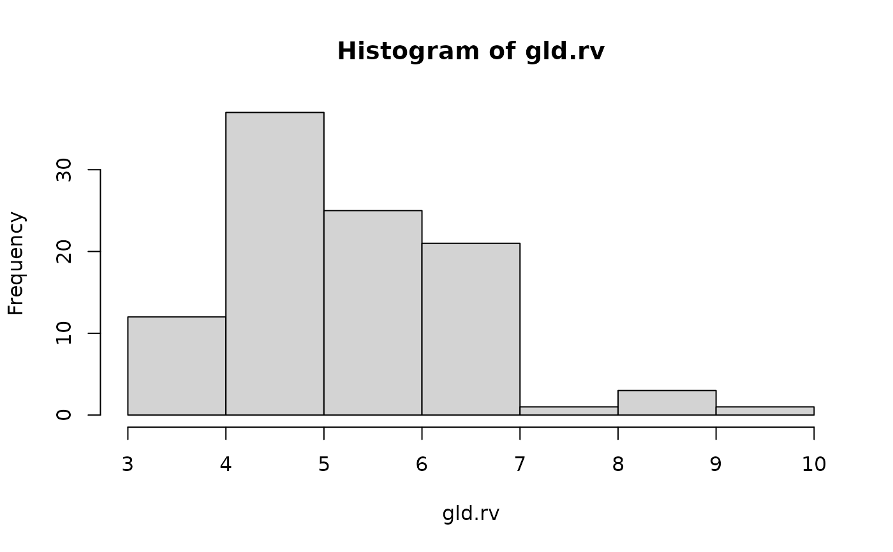
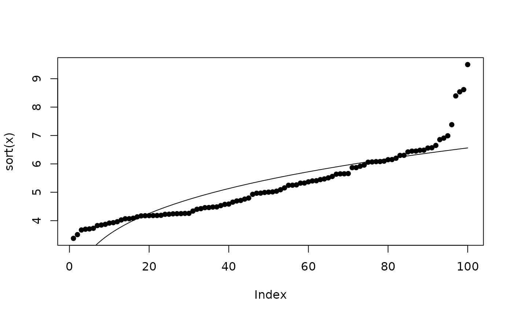

Gld.RdDensity, distribution function, quantile function and random generation for the Generalized Lambda Distribution
dgld(x, params)
dgld.p(x, params)
pgld(q, params)
qgld(p, params)
rgld(n, params)Function
dgld() gives the density,
dgld.p() gives the density in terms of the quantile,
pgld() gives the distribution function,
qgld() gives the quantile function, and
rgld() generates random deviates.
The Generalized Lambda distribution has quantile function
$$f(x)=\lambda_1 +(p^{\lambda_3} - (1-p)^{\lambda_4})/\lambda_2$$
M. J. Wichura 1988. “Algorithm AS 241: The Percentage Points of the Normal Distribution”. Applied Statistics, 37, 477–484.
A. Ozturk and R. F. Dale 1985. “Least squares estimation of the parameters of the generalized lambda distribution”. Technometrics 27(1):84
params <- c(4.114,0.1333,0.0193,0.1588) #taken straight from some paper
gld.rv <- rgld(100,params)
hist(gld.rv)

fit.davies.q(gld.rv) #remember the Davies distn has 3 DF and the GLD 4...
